When we were evaluating functions of a single variable we had to replace the variable with a cell reference. We do the same for functions of several variables. We simply have to use several cell references.
Example6.1.1.Bank balances.
Figure6.1.2.Bank Balance Video
Find the amount of money I will have in the bank in 10 years if I deposit $1000 and the bank pays 5% interest, compounded quarterly. Set the problem up in Excel so that I can use the worksheet for similar problems with different numbers.
Solution.
We use the formula for future value of a single deposit.
Rather than typing the numbers into the formula, we place them in separate cells, so we can easily change the values for any of the 4 variables.
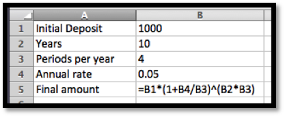Figure6.1.3.Show formulas version
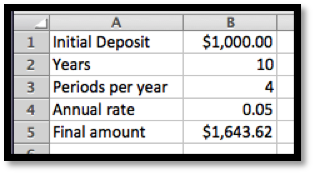Figure6.1.4.Unshow formulas version
At the end of 10 years, we have $1,643.62 in the bank. By simply changing values in the worksheet, I find that compounding the interest annually reduces the final amount on 10 years to $1.628.89, while compounding weekly increases the final amount to $1,648.33.
In this example we have four variables. We could vary the initial deposit, the rate, the number of periods per year and the interest rate. In previous chapters we have a variable (say q) and the function (such as profit) that depends on \(q\text{.}\) Such a function might be written as something like \(\profit(q)= -3 q^2+500q-1000\text{.}\)
If we simplify the notation a little bit in this example so that we have
where \(\operatorname{FA}\) is the future amount, and this is a function of four variables \(d\) (deposit), \(r\) (interest rate), \(p\) (number of payments), and \(y\) (number of years).
Example6.1.5.Demand price defined by 2 points.
Figure6.1.6.Function from 2 points video
Find the revenue for 500 widgets if I know that the demand price for 100 widgets is $20, the demand price for 200 widgets is $18.75, and that the demand price is a linear function. Set the problem up in Excel so that I can use the worksheet for similar problems with different numbers.
Solution.
To make our worksheet easier to read, we use named cells. We first have to find an equation for the demand price formula. We compute a slope and intercept for this line from the points (100, 20) and (200, 18.75). Once we have this function, we find that the demand price is $15 when quantity is 500. We then compute revenue as price times quantity.
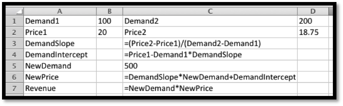
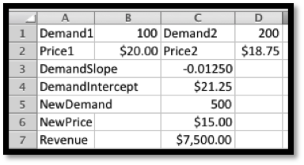
In this problem, revenue is a function of 5 variables: Demand1, Demand2, Price1, Price2, and NewDemand.
The next task to consider is making a table of values for a function of several variables. Since our screens have 2 dimensions, we first look at the case when we allow two values to change. When we made a table for a single variable, we had to use both absolute and relative cell reference to distinguish between constant values used for all entries and variables that changed in each case. With functions of two variables our table will have rows where one variable is held constant and columns where the other is held constant. We note that quick filling a formula with the reference $A5 will keep the column, A, constant but allow the row to change. Similarly with the reference A$5 the column can change, but the row is constant.
Example6.1.7.Building a table with two variables.
Figure6.1.8.Video of table with two variables example
I want to produce a table that shows how much I need to put in the bank to have $100,000 at some point in the future. I will assume that interest is compounded annually. I want interest rate and number of years to be treated as variables with interest rate ranging from 5% to 6% and the length of time to vary from 5 to 40 years.
Solution.
We use the formula for present value of a single deposit. Since the interest is compounded annually, the formula simplifies.
As we build the table, the future amount will be a constant, so it needs to be given as an absolute reference. The number of years will be down the left side of the table and will be constant across a row, so its reference should have a dollar sign before the letter. The interest rate will be listed across the top of the table, so its reference should have a dollar sign before the number.
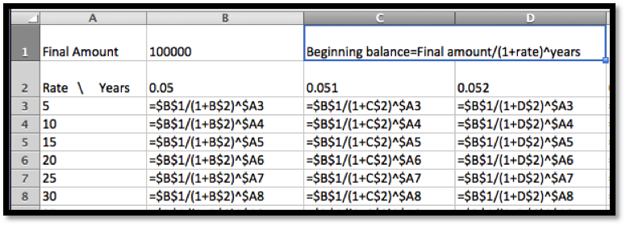
Figure6.1.9.
This lets us build the table we desire. From the complete table, we see that we can have $100,000 in the bank in 40 years by making a deposit of $9,722.22 at 6% interest. In contrast if we only earn 5% interest and can only keep the money in the bank for 15 years, we need to start with $48,101.71.
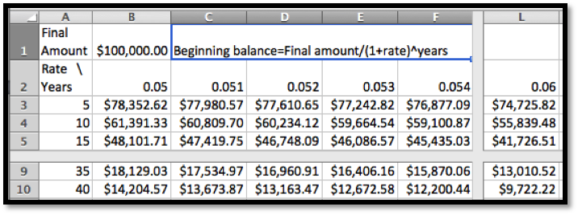
Similarly, we might want to produce a table that shows the monthly payment on a mortgage where both the annual interest rate and the number of years are treated as variables. Such a chart would be useful in deciding how big a mortgage a person can afford with different kinds of mortgages.
Example6.1.10.Mortgage payments.
Figure6.1.11.Video presentation of mortgage payments
I want to produce a table that shows the monthly payment on a $100,000 mortgage with a range of interest rates and lengths of the mortgage.
Solution.
We use the PMT command to find the monthly payment.
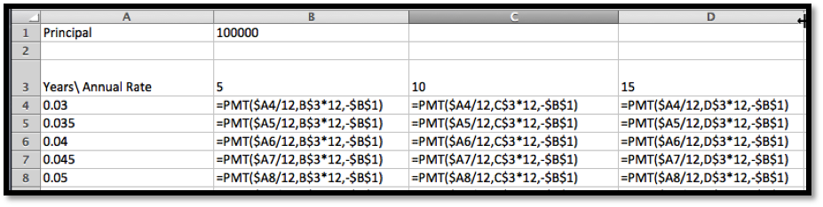
We can see that the monthly payment is $421.60 for a 30-year fixed rate mortgage at 3% compounded monthly. For a 10-year mortgage at 6% the payment increases to $1,110.21.
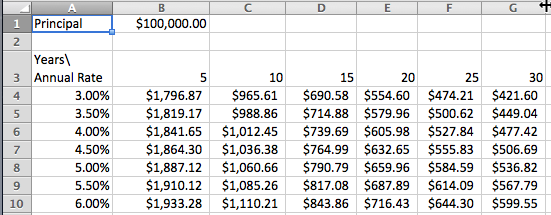
After we build a table for a function we would also like to see a graph of the function. Excel’s abilities to graph surfaces in not one of the program’s strong points. Nevertheless, it is useful to be “able to see the big picture” by looking at a graph. We will also note how to draw a graph of a surface with Wolfram Alpha.
When we looked at models of price, quantity, cost, revenue, and profit, we made the simplifying assumption that a company only produces one product. We want to consider what happens with two products.
Example6.1.12.Table and graph.
Figure6.1.13.Video Producing a graph from a table
I have a company that produces two products, widgets and gizmos. The two demand functions are:
Produce a table and a graph for revenue as a function of the quantity of gizmos and widgets produced.
Solution.
We need to start by producing a formula for revenue. To shorten the equations we will abbreviate the terms or use initials. We need formulas for revenue for each of our products:
Next we build a build a table for the function as we have done above.
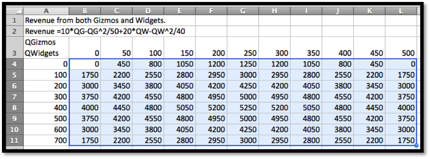
Figure6.1.14.First table
Finally, we would like to see a graph of the function. We notice that the 3D plots in Excel have a number of drawbacks. The plots do not label the input variables. These first plots also don’t tell us what values of the variables correspond to particular points on the graph. Some of these drawbacks can be overcome, but only with more work than we wish to expend in this course. We will only add one non-intuitive option to make the graphs work better.
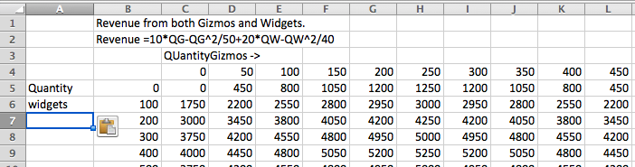
Figure6.1.15.Second table
We will move the names of the variables out of the upper left corner of the chart and into the row above and to the side of the data. We leave the corner cell blank. This will let us see the values of the variables in the graphs. In the table, we select the data we would like to graph. In this example we select from cells B4 through M12. Finally, we select a chart to insert. The charts we are interested in are surface charts. The types of interest are 3-D Surface, Wireframe 3-D, and contour. Each of these chart types highlights some useful information.
The 3-D Surface gives a fast picture. It is useful in seeing local minimums and maximums.
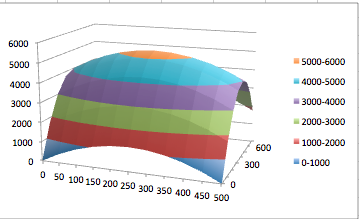
Figure6.1.16.Surface chart
The Wireframe 3-D chart emphasizes that we can build a reasonable picture from the curves obtained by treating either \(x\) or \(y\) as a constant. It lets us understand a function of 2 variables by putting together a collection of several functions of one variable. This point of view will be useful when we try to take derivatives.
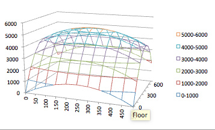
Figure6.1.17.Wire frame chart
The Contour chart emphasizes the level curves. The rate of change will be fastest in a direction perpendicular to the level curves.
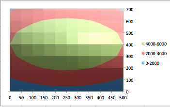
Figure6.1.18.Contour chart
Another alternative for seeing a graph is to use Wolfram Alpha. Unfortunately variable names in Alpha seem to be limited to a single letter, or a letter followed by a digit. Thus we change the formula to one using the names g and w.
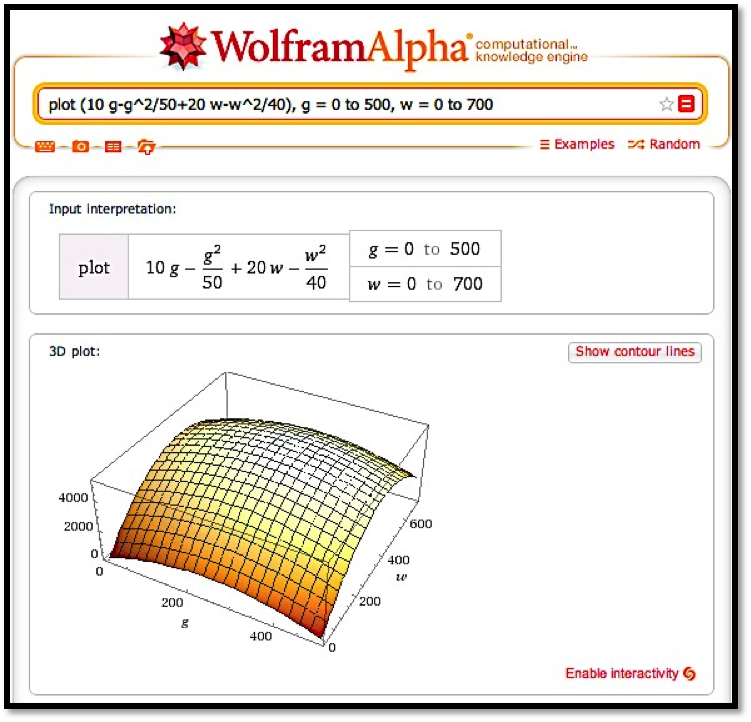
The techniques of this section let us look at functions of two variables. In the next section we explore techniques for understanding functions of several variables by treating some of the variables as constants.
Reading QuestionsReading Check
1.Reading check, Evaluating and Graphing Functions of Several Variables.
This question checks your reading comprehension of the material is section 6.1, Evaluating and Graphing Functions of Several Variables, of Business Calculus with Excel. Based on your reading, select all statements that are correct. There may be more than one correct answer. The statements may appear in what seems to be a random order.
Wolfram Alpha will plot functions of two variables.
All functions have a single input variable, x
Excel easily graphs functions of three variables.
In the text, the demand price of an object was discussed as a function of 5 variables, 2 given demands with associated prices and the demand quantity in question.
The book showed how to make a table for functions of two variables.
In the text, bank balance was discussed as a function of 4 variables.
None of the above
ExercisesExercises: Evaluating and Graphing Functions of Several Variables Problems
Exercise Group.
For the following exercises, set up an Excel notebook, and evaluate the given function of several variables at the indicated values. T he workbook should be set up so that the input values can be changed and the formula will re-compute with the new values.
1.
Evaluate the function \(f(x,y)=x^2+3xy+4y^2\text{,}\) when \(x=4\text{,}\) and \(y=-2\text{.}\)
Solution.
Setting this up so that the values of \(x\) and \(y\) can be easily changed we define \(x\) and \(y\) in separate cells and then enter the function that computes \(f(x,y)\text{.}\)
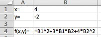
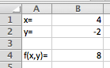
Excel commands and general setup
Excel output
2.
Evaluate the function \(f(x,y,z)=x^2+3xy+4y^3+5xyz\text{,}\) when \(x=3\text{,}\)\(y=5\text{,}\) and \(z=7\text{.}\)
3.
Express cost as a function of quantity, initial cost, and per-unit cost, when the initial cost is $2,000, the per-unit cost is $25, and the quantity is 75.
Solution.
The function we would have is
\begin{equation*}
\text{Cost}=\text{Initial cost}+\text{per unit cost}*\quantity\text{.}
\end{equation*}
We can set this up as a general Excel worksheet that allows us to vary all three givens.
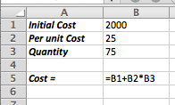
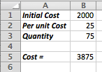
Excel commands and general setup
Excel output
4.
Express revenue as a function of two quantity demand-price pairs and quantity, assuming that demand price is a linear function, where the quantity demand-price pairs are \((0, \$20)\) and \((100, \$18)\) and the quantity is 300. (You may find it useful to have intermediate computations that find the coefficients of the demand price function, and the demand price.)
5.
Express revenue as a function of two quantity demand-price pairs and quantity, assuming that demand price is an exponential function, here the quantity price pairs are \((0, \$20)\) and \((100, \$18)\) and the quantity is 300. (You may find it useful to have intermediate computations that find the coefficients of the demand price function, and the demand price.)
Solution.
To get the price equation we can solve the system of equations we get by evaluating the exponential function \(P=P_0 e^{kq}\) at the two given points:
\begin{align*}
(0,20) \text{ gives us } 20 \amp =P_0 e^{(k*0)}\\
(100,18) \text{ gives us } 18 \amp =P_0 e^{(k*100)}\text{.}
\end{align*}
Then \(P_0=20\) (from the first equation) , and \(18=P_0 e^{(k*100)}\) implies \(18=20 e^{(k*100)}\) so that \(e^{(k*100)}=18/20\text{.}\)
Hence \(100*k=\ln(18/20)\text{.}\) Solving for \(k\text{:}\)
Alternatively we can use Excel. Remember that if we have only two points we need to add one of the pairs twice so that Excel can graph the points correctly in a scatter plot.
The difference between the symbolic and numerical answers is a matter of how many decimals / significant digits we choose to keep.
The simplest answer would be to treat Price as a function of quantity. But this is a section about multivariable functions. So what if we wanted a more general setting where we were given the following:
Express profit as a function of two quantity demand-price pairs, quantity, initial cost, and per-unit cost, assuming that demand price is a linear function, where the quantity demand-price pairs are \((100, \$30)\) and \((200, \$28)\text{,}\) the quantity is 300, the initial cost is $3000, and the per-unit cost is $8. (You may find it useful to have intermediate computations that find the cost and revenue.)
7.
Express the future value of a deposit as a function of the initial deposit, the annual interest rate, the number of years the deposit is held, and the number of times per year that the interest is compounded, where the deposit of $10,000 is held for 20 years at 3% interest, compounded monthly.
For the rate, you should either make sure the cell is formatted as a percentage. Or you can just enter the decimal 0.03. The display formula allows you to check that the number is formatted correctly. We do want Excel to use the value of 0.03 in the formula, not 3.
8.
Express the future value of a regular series of deposits as a function of the periodic deposit amount, the annual interest rate, the number of years the deposits accumulate, and the number of times per year that the deposits are made, where the deposit of $200 is deposited weekly for 20 years at 3% interest, compounded weekly.
9.
Express the current value of a bond as a function of the final value, the annual interest rate, and the number of years the bond is held, where the final value of the bond is $10,000, held for 15 years at 3.5% interest, compounded monthly.
So, to have $10,000 after 15 years we need to invest $5,920.08 now.
Exercise Group.
For the following exercises, set up an Excel notebook to produce a table for the given function as a function of the two specified variables and the other parameters. The workbook should be set up so that the input values can be changed and the formula will recompute with the new values.
10.
Create a table for the function \(f(x,y)=3x^2+xy+5y^2\text{,}\) with \(x\) ranging from \(-10\) to \(10\text{,}\) and \(y\) ranging from \(-5\) to \(15\text{.}\)
11.
Create a table for the function \(f(x,y,z)=xyz+x^2 y-y^2+5z\text{,}\) with \(x\) ranging from \(-10\) to \(10\text{,}\) and \(y\) ranging from \(-5\) to \(15\text{,}\) with \(z=2\text{.}\)
Solution.
We need different types of absolute references. If the \(x\) values are entered in column A, and the \(y\) values are entered in row 4, and \(z\) is stored in Cell B2:
When using \(x\text{,}\) we want to fix the column reference.
When using \(y\text{,}\) we want to fix the row reference.
When using z we want to fix the cell reference.
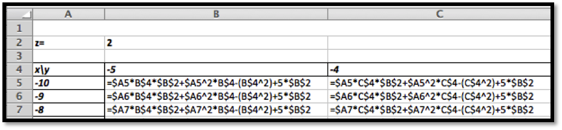
In table form we get:
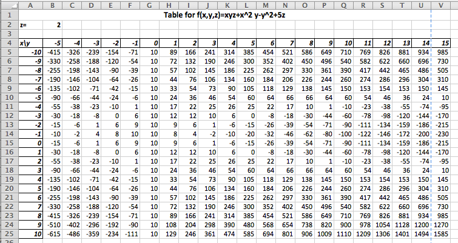
We can always check our work by double clicking a value in the table. This will highlight the calls called upon to compute the entry. Note that this will check if you are calling on the right \(x\text{,}\)\(y\) and \(z\text{.}\) To check that the formula is correct we recommend the Show Formula feature.
12.
Create a table that expresses cost as a function of quantity, and per-unit cost, with initial cost as a parameter, when the initial cost is $3,000, the per-unit cost ranges from $20 to $40 by $2, and the quantity ranges from 50 to 100 by 5.
13.
Create a table that expresses the future value of a deposit as a function of the annual interest rate and the number of years the deposit is held, with the amount of the initial deposit and the number of times per year that the interest is compounded being treated as parameters, where the interest on a deposit of $10,000 is compounded quarterly, and the deposit is held for 20 to 40 years at interest rates ranging from 3% to 5%.
Solution.
We will enter the deposit and the times the interest is compounded (ppy) as fixed parameters. The years run from 20 to 40, and the interest rate from 3% to 5%. We have enough space on one sheet to do the years in increments of 1. The interest is done in increments of 0.25%. This is something not uncommon in the banking world.
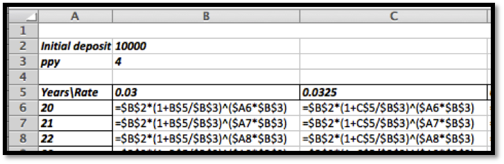
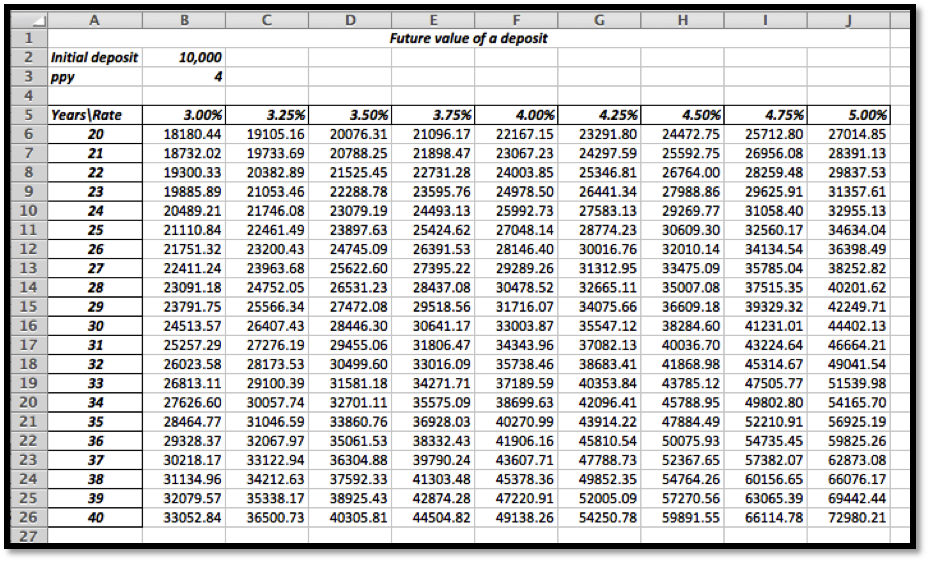
How much detail should you give? Imagine working at a bank. What would be a good spreadsheet to share with a colleague, boss, or costumer? It should be adequately labeled and it should be easy to read.
14.
Create a table that expresses the future value of a regular series of deposits as a function of the annual interest rate and the number of years the deposit accumulate, with the amount of the deposits and the number of times per year that the interest is compounded being treated as parameters, where a deposit of $2,000 is made monthly, and the deposits accumulate for 20 to 40 years at interest rates ranging from 3% to 5%.
15.
Create a table that expresses the current value of a bond as a function of the number of years the bond is held and the interest rate, where the final value of the bond is $10,000, the number of years the bond is held runs from 5 to 40 and the interest rate runs from 2% to 6%.
Solution.
The entries in the cell look like this:
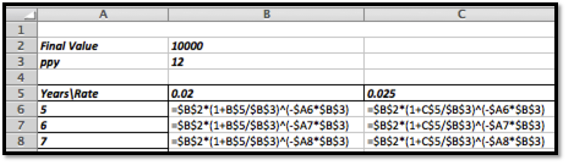
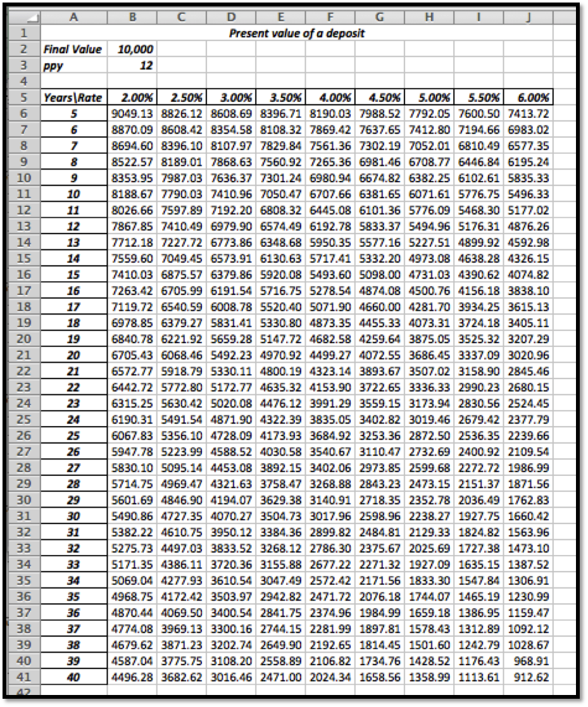
We can easily read off what our initial investment needs to be if we want to earn $10,000.
16.
Create a table that expresses revenue as a function of the quantity of widgets and gizmos sold as both quantities range from 0 to 1000, where the demand price functions are:
Create a table that expresses revenue as a function of the quantity of widgets and gizmos sold as both quantities range from 0 to 1000, where the demand price functions are: